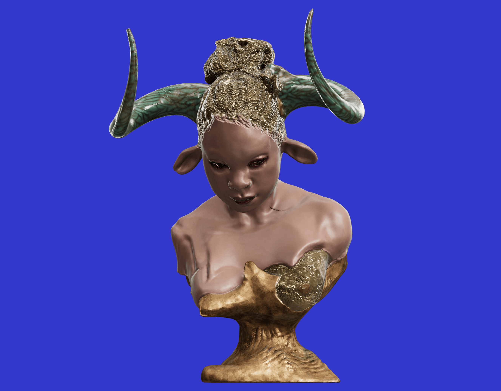

AURIEA HARVEY AND THE FUTURE OF DIGITAL SCULPTURE is a fascinating exploration of the ways in which digital technology is transforming the art of sculpture. The article highlights the work of artist Auriea Harvey, who has embraced digital tools and techniques to create innovative and compelling works of art.
One of the key insights of the article is the potential of digital tools to break down the traditional boundaries between different artistic disciplines. Harvey's work, which combines elements of sculpture, animation, and video game design, demonstrates the possibilities of using digital technology to create truly interdisciplinary art.
